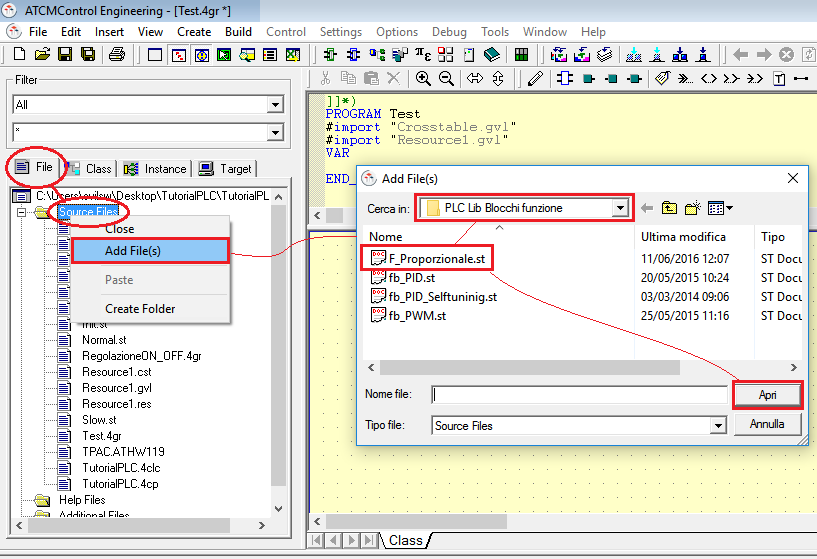
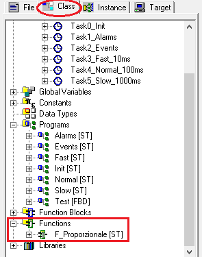

E’ possibile importare una funzione/blocco funzione precedentemente utilizzato in un altro progetto. Per far ciò occorre:
Selezionare il tab “File”
Selezionare “Source Files” e premere il tasto destro del mouse
Selezionare “Add File(s)”
Andare a selezionare la funzione/blocco funzione che si vuole importare nel nuovo progetto
Selezionare “Apri”

La funzione/blocco funzione appena importata sarà visibile nel tab “Class” sotto la voce “Functions” o “Function Blocks”. In questo caso è stata importata una funzione.
